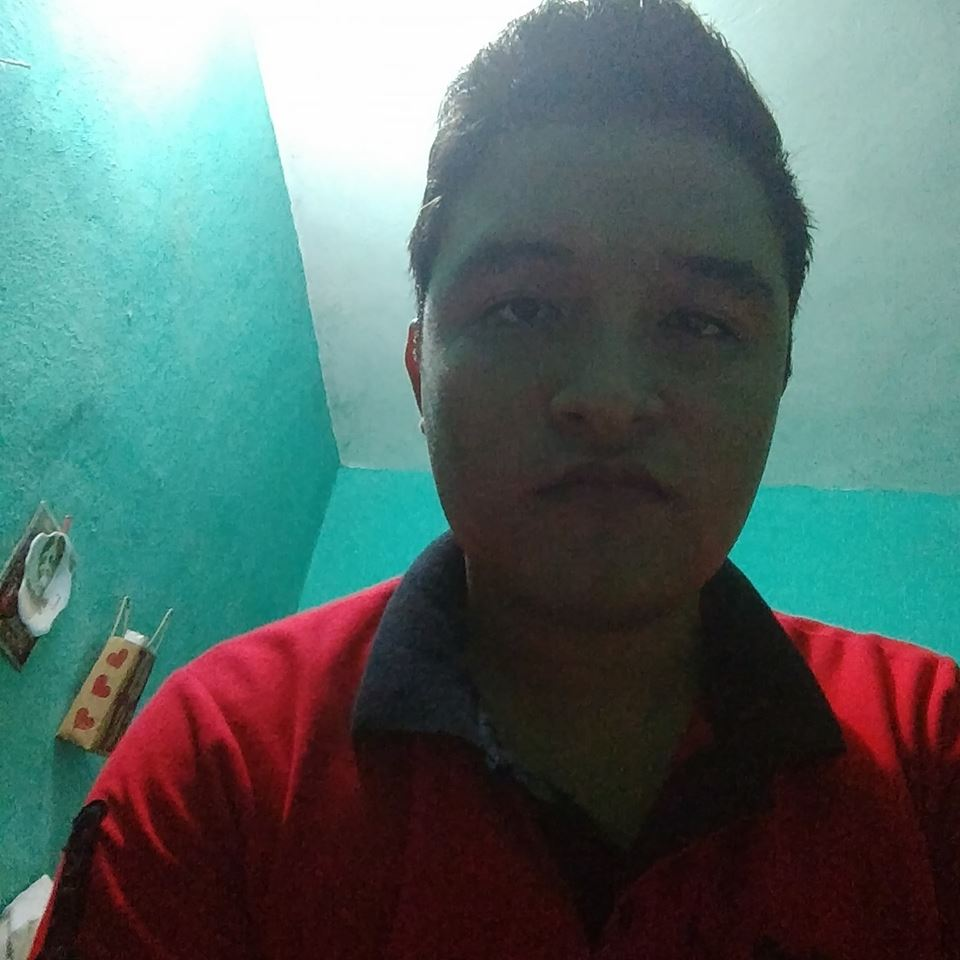

Andrik Daniel Pérez Vázquez
Consideramos una buena estrategia el realizar una página publicitaria dando a conocer lugares turísticos de nuestra entidad y al mismo tiempo desarrollamos nuestras habilidades en cuanto a diseño y programación.
Jhovanny Sorrosa Arávalo
Realizamos una pagina web para poder promover este sitio turístico llamado “El Arco Del Tiempo” ya que nos dimos cuenta que este lugar no era tan conocido como podía ser, ya que es una maravilla natural del estado de Chiapas.
Bryan de Jesús Rodríguez Vázquez
Creímos que seria buena idea realizar una pagina publicitaria para dicha atracción turística para que la gente de todo el mundo conozca el lugar llamado Arco del Tiempo.
Angel Antonio Vassallo Velázquez
Esta pagina tiene de objetivo que las personas ajenas a nuestro estado conozcan la atracción turística y llegue a pasar la información para que mas personas la conozcan.
Erwin Ulises Velasco Fonseca
Al finalizar todo el proceso de este proyecto pudimos terminar con éxito lo que nos propusimos, que damos dar a conocer el arco del tiempo, desde donde se encuentra, dar información de este lugar y nos llevamos la vivencia de haber experimentado con algo muy común que pasa a nuestro alrededor. Fuimos acorde al tiempo planificado, el tiempo obtenido lo ocupamos en todo lo expuesto anteriormente.